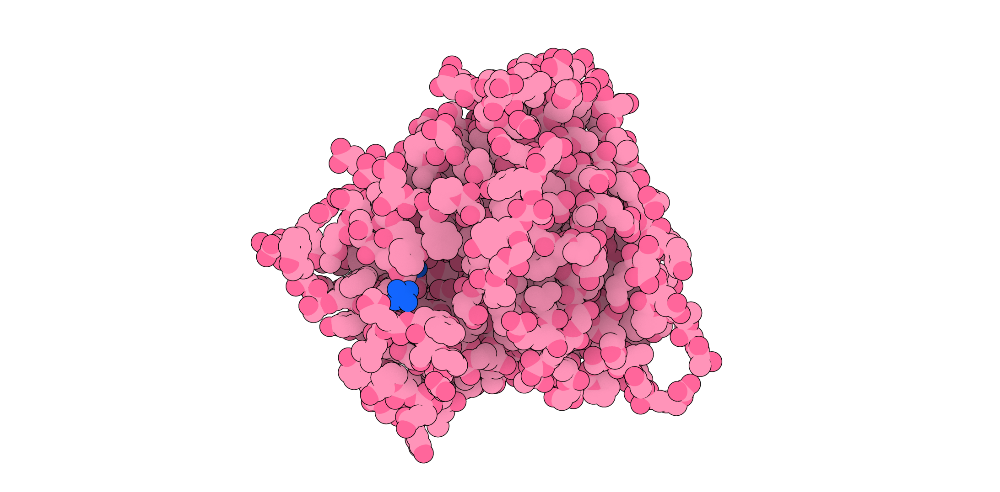

Esta página es el cuaderno de actividades de Francisco Campuzano Jiménez de la asignatura de Ingeniería de Proteínas del curso 2021-2022 sobre la proteína Human glutaminyl cyclase (hQC).
Este cuaderno está formado por las actividades 1ª-9ª y un ejercicio extra propuesto por el alumno. No se incluye, por tanto, en esta relación de ejercicios la actividad 10ª, al haber decidido sustituirla por las actividades 4ª y 9ª. Se ha optado por esta opción porque a lo largo de la asignatura se llevaron a cabo los ejercicios de forma ordenada y estos ya habían sido realizados antes de la modificación de la relación de actividades.
Además, se incluye una actividad adicional, el análisis de trayectoria de una simulación de Dinámica Molecular realizada. Esta actividad fue motivada por el profesor, que nos animó a explorar la proteína asignada de forma independiente y a incluir los resultados en el presente trabajo.
Este cuaderno está formado, por un lado, por un repositorio albergado en github, con el cual se puede acceder al código empleado en la realización de este trabajo. Además, gracias al uso de Git, un software de control de versiones, se puede acceder al historial de versiones del proyecto, pudiendo observar cómo este cuaderno realizado de forma progresiva e incluso estudiar el código en cada uno de los momentos. Al hacer público y accesible este material se está facilitando el seguimiento de la asignatura a futuros compañeros y compañeras.
Por otro lado, este cuaderno está formado por esta página web albergada en Github. Se ha optado por este formado porque facilitaba la tarea de incluir animaciones, bloques de código y hacer público el resultado. Para realizarla se ha usado el software MkDocs, el cual permite generar sitios web estáticos (y que por tanto pueden alojarse de forma gratuita en un repositorio) a partir de Markdown. Este software está específicamente diseñado para crear la documentación de un proyecto y era, por tanto, ideal para este caso. Además, se ha utilizado dentro de un GitHub workflow. Este workflow consiste en una serie de comandos que se ejecutan en la nube y que se encargan de instalar los programas necesarios y luego "transcribir" los archivos markdown en archivos html.
Este sitio web se ha realizado empleando la plantilla creada por el Aula de Software Libre de la Universidad de Córdoba.
El material está publicado con licencia Atribución-NoComercial 4.0 Internacional (CC BY-NC 4.0)